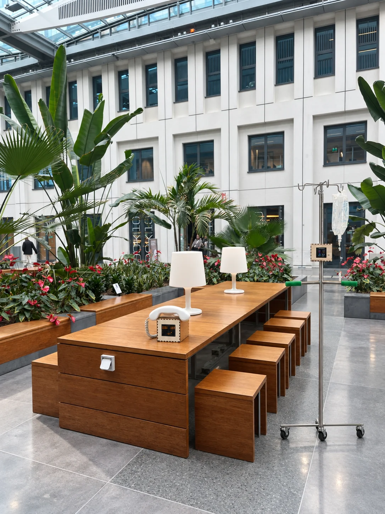
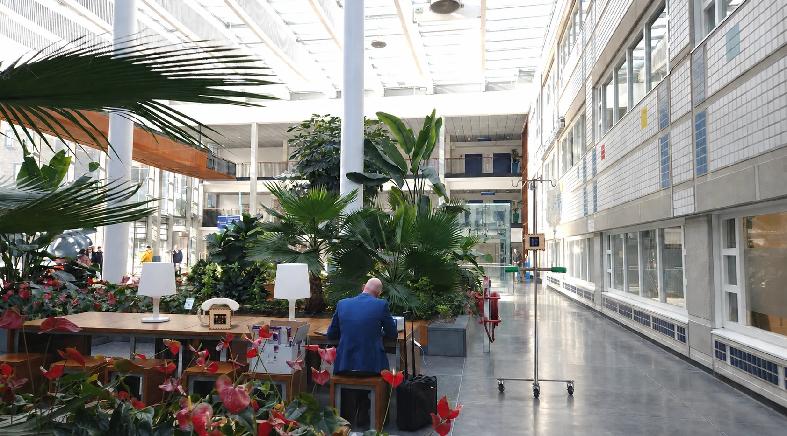
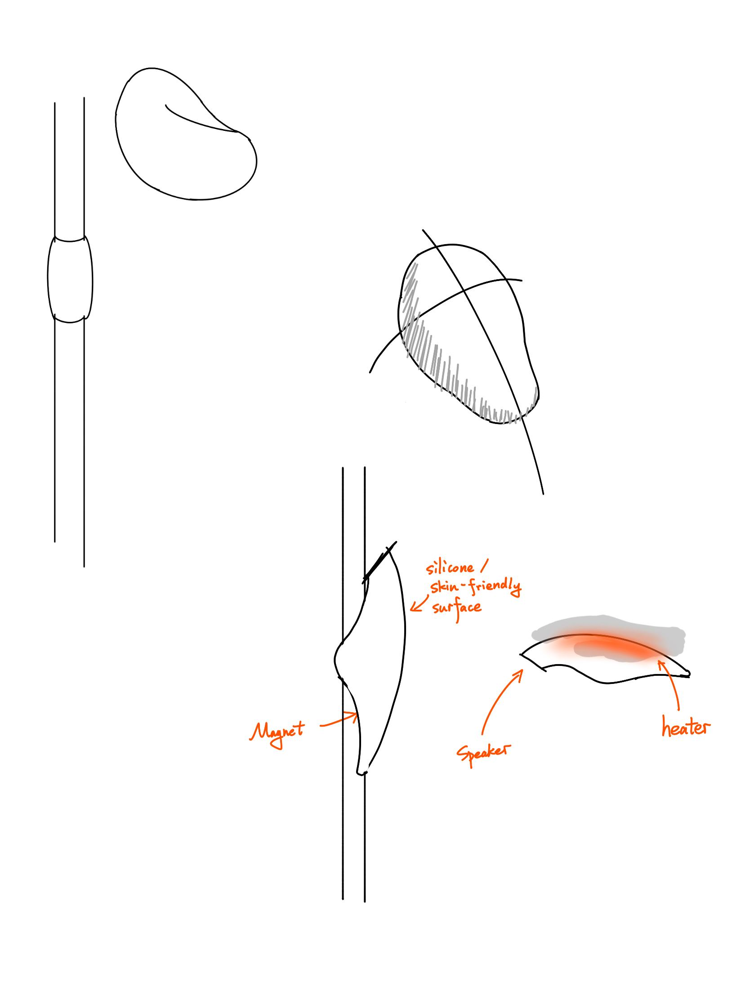
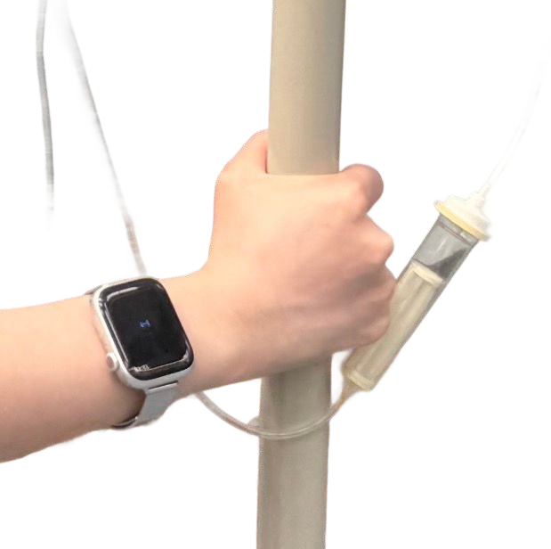
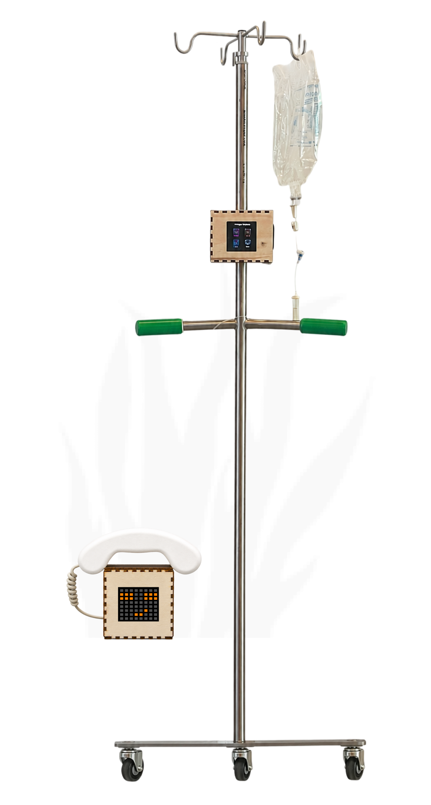
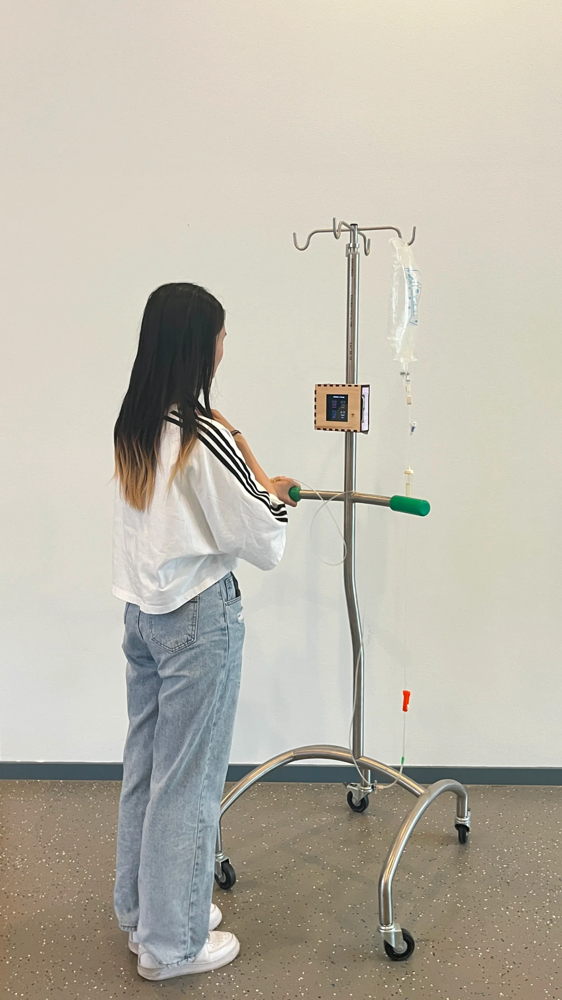
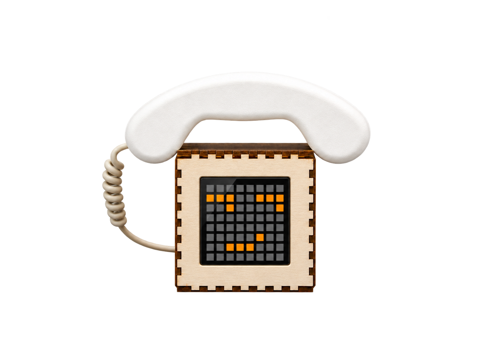
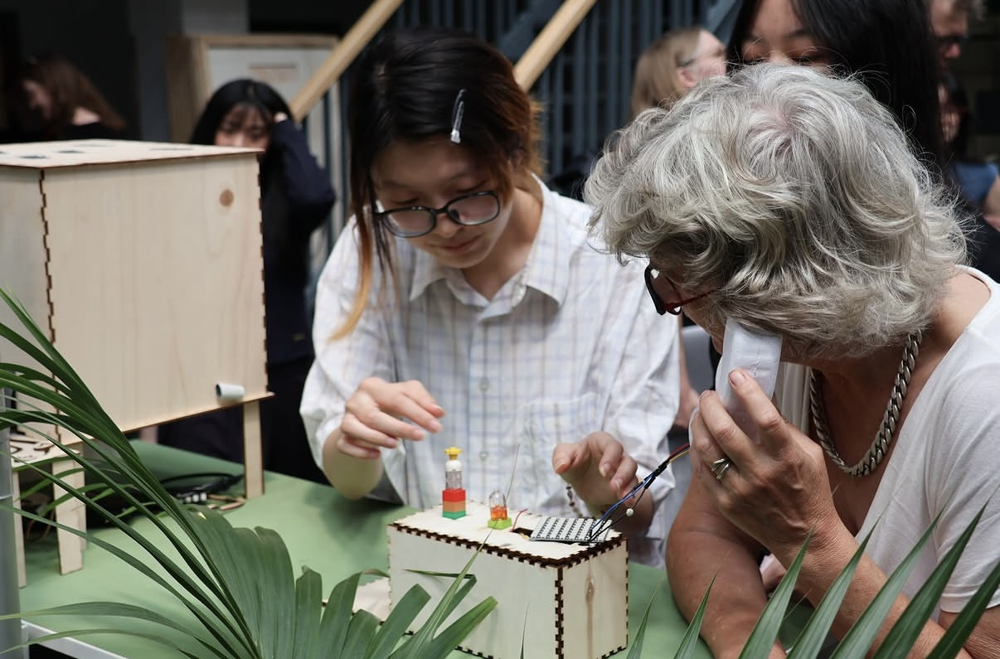

WhisperingGarden.
Turning passive waiting into an active response. An IV-pole interface guides people through the hospital garden to a listening point, where they hear voices from others and can leave one of their own.
- My role
- Product & design lead: research, interaction, hardware
- Period
- Mar–Jun 2026
- Place
- Erasmus MC, Rotterdam
- Team
- With Mingxuan Xu, Tiancheng Xi and Yuxin Li

Summary
During an infusion, people are tied to a chair, a line and a schedule. The wait feels passive and lonely.
Five patient interviews showed three layers of loneliness. A small sense of choice changed how the wait felt.
An IV-pole interface that leads people to a garden listening point to hear and leave voice messages.
A working prototype. 5 / 5 participants chose a theme, found the point and listened to a full message.
What I did
3 contributionsPatient research & framework
Led five interviews with long-term infusion patients and translated the findings into the Warmth, Voice and Choice framework.
ResearchProduct direction & interaction
Defined the product direction, the interaction sequence from IV pole to garden, and the emotional feedback language of light, pixels and voice.
ConceptHardware & prototyping
Led hardware selection, integration and physical prototyping, up to a working loop of proximity sensing, pixel feedback and voice playback.
Prototype
ESP32 × 2ArduinoHC-SR04WS2812B 8×8 LED matrixDFPlayer MiniPhysical prototypingIn-depth interviews
Product decisions & metrics
Tested with 5 participants- Decision 01The interface lives on the IV pole, not a phone.
Patients already keep a hand on the pole, and a screen would pull their eyes down instead of out into the garden. Trade-off: cues must stay glanceable, so little information fits.
- Decision 02Voice and Choice first, Warmth later.
Temperature was far harder to build reliably, and a working end-to-end loop mattered more for testing. Trade-off: the physical layer of loneliness is still open.
- Decision 03Four themes, not an open feed.
A small, real choice gave back a sense of agency without adding decisions. Trade-off: less variety per visit.
Share of patients who hear a complete message during treatment. 5 / 5 in testing.
- Messages left per session (3 / 5 hesitated to record)
- Self-reported agency and loneliness, before vs after
- Tubing adjustments while interacting (2 / 5 in testing)
- Extra work for nurses
From a five-person test in a planted setting: directional, not proof of effect.
Waiting is not an empty moment.
During an infusion, a person is tethered to a chair, a line, and a schedule they cannot control. The physical constraint amplifies uncertainty and makes time feel strangely passive.
First-hand observation and patient conversations revealed familiar coping behaviors: looking at a phone, resting, or talking to someone nearby. Yet the needle, tubing, and IV pole continually pull attention back to treatment.
The hospital's planted atrium already offered light, greenery, and space to move. The opportunity was to make that environment respond gently to the person within it, without asking them to stare at another screen.

People living with recurring or long-duration IV treatment, especially those who attend alone.
Make waiting time something a person can actively explore.
The need beneath the waiting.
Five in-depth interviews with long-term infusion patients shaped a four-stage emotional journey: before treatment, settling in, the long wait, and leaving.
The strongest signal was not simply boredom. Patients described three overlapping forms of loneliness: physical isolation, missing social feedback, and a deeper loss of agency. A small sense of choice could change how the wait was experienced.
Emotional journey
Interview synthesis- 01
Pre-infusion
Anticipation and uncertainty
“I was nervous before the needle went in.”
Loneliness - 02
Settling in
Body and equipment take focus
“I felt a bit more in control when I adjusted my sitting position.”
Loneliness - 03
The long wait
Loneliness and low agency peak
“Nobody explained what was next and the remaining time, so I felt a bit lost and anxious.”
Loneliness - 04
The end
Relief mixed with uncertainty
“I feel like a burden asking the doctor if I’m done.”
Loneliness
Filled cells: how strongly loneliness and low agency came up at each stage, from five interviews
- 01 / MentalAnxious, lonely, unsettled
- 02 / BodilyCold and physically restricted
- 03 / TemporalUnclear process and remaining time
- 04 / BehavioralMovement and one-handed activities constrained
Three layers of loneliness
Research synthesis → design dimensions- Physical
Cold, constrained, unable to move freely
WarmthNot built - Social
Little companionship or immediate response
Voice - Existential
Few meaningful choices during the wait
Choice
Why no Warmth? We explored heat in early concepts, but safe, controllable warmth right next to a patient on an IV line was too hard to build within the project. We put our effort into Voice and Choice, the two needs we could build and test with real people.
A garden that answers back.
Choose a voice theme, follow gentle cues into the garden, discover a listening point, and decide whether to listen or leave a message of your own.
Light and pixel expressions communicate a state from a distance. Voice makes the presence of another person tangible. Together, they give feedback without demanding continuous screen use or complex movement.
The concept evolved from a handheld device to a wearable cue and, finally, an IV-pole interface paired with a garden listening point. The final arrangement brought discovery and conversation into one place.
From object to place
Three iterations, one clearer interaction- 01 / Handheld

Warmth close to the body
Useful as comfort, but not strongly connected to the garden experience.
- 02 / Wearable

A directional cue
Checking the wrist added effort; separating audio from the garden confused participants.
- 03 / Final prototype

Interface on the pole
The pole guides discovery; a single garden point holds the voice exchange.
The interaction, step by step
IV pole → garden- IV pole01
Choose
Select Comfort, Humor, Advice, or Daily.
- IV pole02
Seek
Emoji size and haptic intensity shift with distance.
- IV pole03
Arrive
Color and a short pulse confirm the listening point.
- Garden04
Listen
Lift the handset and hear a thread of voices.
- Garden05
Respond
Record a new message or reply to one you heard.


Built to respond in the real world.
The core proof is a working interaction loop: proximity sensing, pixel feedback, and voice playback responding within the same physical experience.
System architecture
Sense → coordinate → expressFour voice themes
8 × 8 expressions from the original LED artwork- Comfort
- Humor
- Advice
- Daily
Participants found Humor the most attractive theme. Comfort and Daily looked too similar, which the next version needs to fix.
Interaction states
- 01Theme selected
Comfort · Humor · Advice · Daily
- 02Searching
Expression changes with distance
- 03Point found
Color confirms arrival
- 04Listening / recording
Garden-side expression reflects audio state
What it took to make it run
Two ESP32 boards split the load and synchronize through a button signal. LED power, DFPlayer communication, power-bank auto-shutdown, and wiring inside the wooden housing were all real integration constraints.
The pixel display made discovery feel playful, but its cues had to stay glanceable. The device should direct attention toward the garden, not hold it on a screen.

Inside the pixel display
The Arduino sketch maps an 8 × 8 LED matrix and two physical buttons to expression and listening states.
#include <Adafruit_NeoPixel.h>
#define LED_PIN 15
#define BUTTON_1 14
#define BUTTON_2 27
#define LED_COUNT 64
#define MATRIX_W 8
#define MATRIX_H 8
#define BRIGHTNESS 35
Adafruit_NeoPixel strip(LED_COUNT, LED_PIN, NEO_GRB + NEO_KHZ800);What worked. What resisted.
Five participants with infusion experience completed the full interaction journey in a planted environment. The sessions focused on clarity, emotional resonance, and willingness to engage.
- 5 / 5Selected a theme and found the listening point
- 5 / 5Listened to the full voice message
- 3 / 5Were hesitant to record their own message
- 2 / 5Repeatedly adjusted the IV tubing while interacting
The experience sparked curiosity. Humor was the most attractive theme.
Haptic and visual feedback complemented each other: one was explicit, the other intuitive.
Comfort and daily icons looked too similar; the white icon was too bright.
Next iteration
Keep / changeChoice generated more agency than passive content. The humor theme sparked curiosity, and visual and tactile cues complemented each other during discovery.
Reduce the need to walk, hold the handset, or record. Test a seated, hands-free version; calibrate proximity feedback; make the theme symbols easier to distinguish.
A small choice changed how the wait felt.
We set out to make waiting time something a person could actively explore. With a working device in a real atrium, every participant chose a theme, found the garden point and listened to a full message.
Leading the hardware taught me where experience and engineering meet. Every cue had to stay glanceable, every wire had to fit inside a small wooden box, and light, pixels and voice had to respond as one.
What worked
From the five sessions- ChoiceChoosing created agency
Picking a voice theme gave people something to decide during a wait that normally decides for them. It generated more agency than passive content, and 5 / 5 found the listening point.
- SensesTwo cues, one message
Haptic and visual feedback complemented each other during discovery: participants described one as explicit, the other as intuitive.
- VoiceMessages held attention
5 / 5 listened to a full message, and the Humor theme sparked the most curiosity.
Where I'd take it next
Next iteration- Make speaking up easier
3 / 5 hesitated to record. A seated, hands-free listening point with lighter ways to reply, like a quick reaction, could lower that barrier.
- Test where it matters
Evaluate it in a real infusion setting over a longer period, and question the two-controller architecture before scaling it up.
Waiting doesn't have to be empty. A small, real choice can make it feel like your own time again.